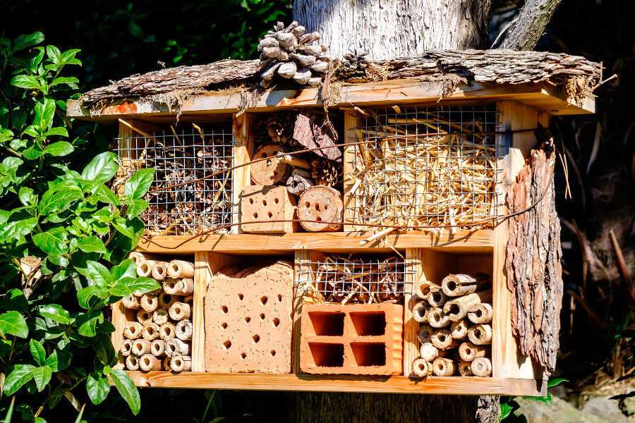

INSECT HOUSE
Watch the way insects live.
Located near the entrance of the zoo, the Insect House is a fascinating place to explore the world of insects. You can observe various species in their natural habitats and learn about their behaviors and roles in the ecosystem.
Discover the tiny world of insects. The Insect House is a great place to learn about the diverse species of insects and their importance in nature.
Today's highlights:
- Butterfly Garden - Observe butterflies in a beautiful garden setting.
- Ant Colony - Watch ants work together in their colony.
- Beekeeping Demonstration - Learn about the importance of bees and how honey is made.
WHERE WILL YOU FIND IT?
The insect house is towards the giraffe habitat directly before the koala enclosure.